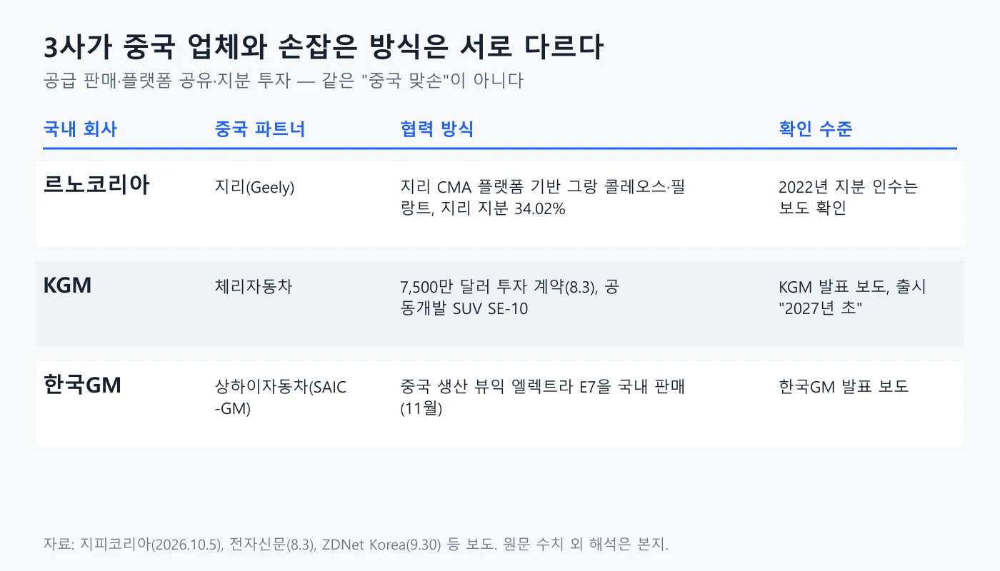
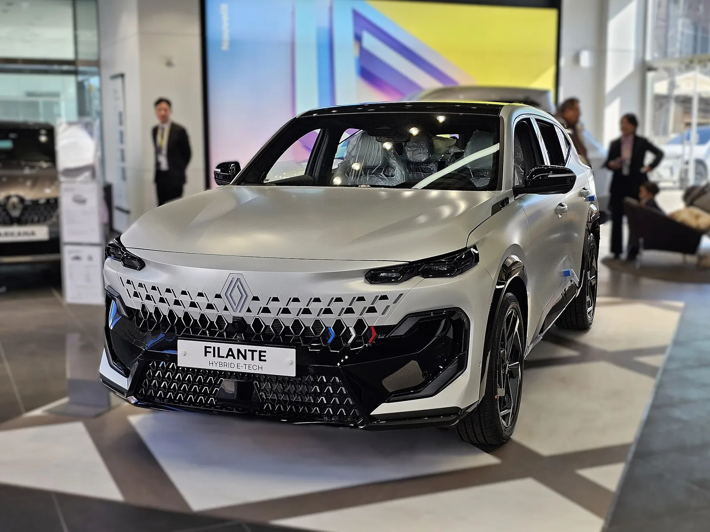
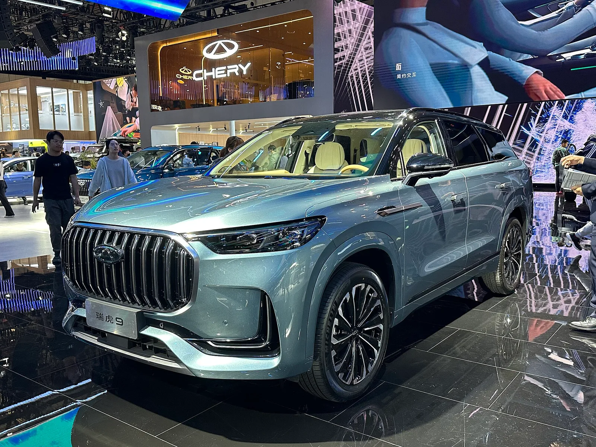
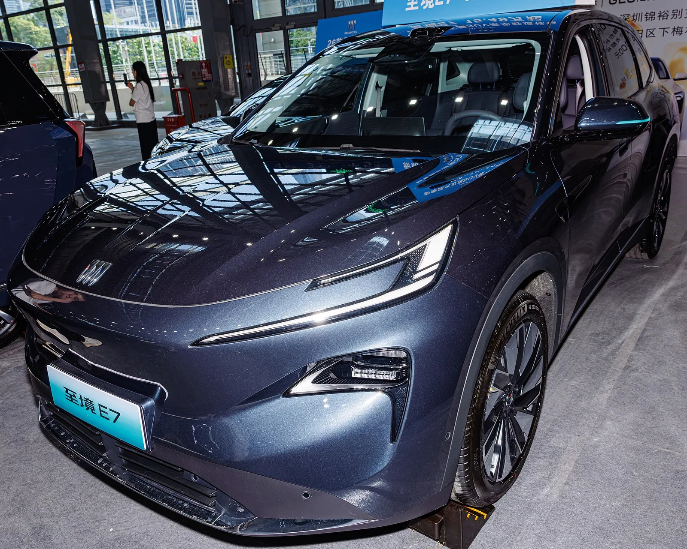
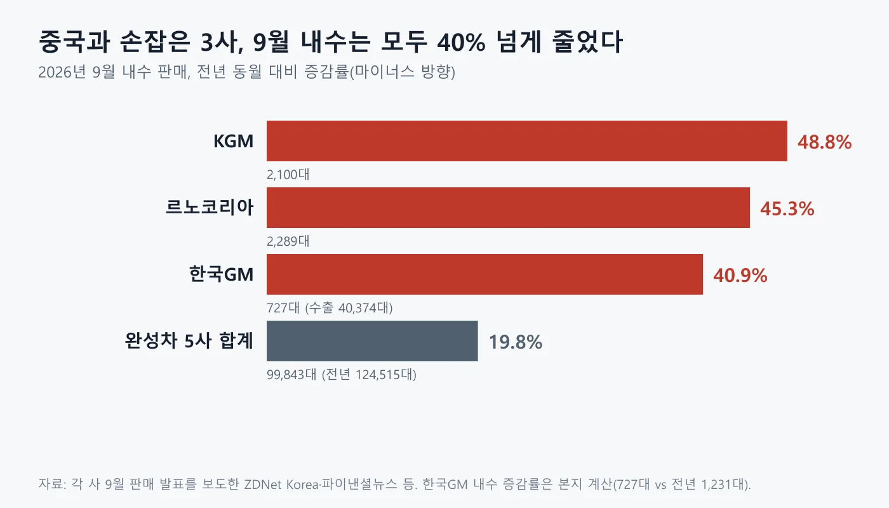
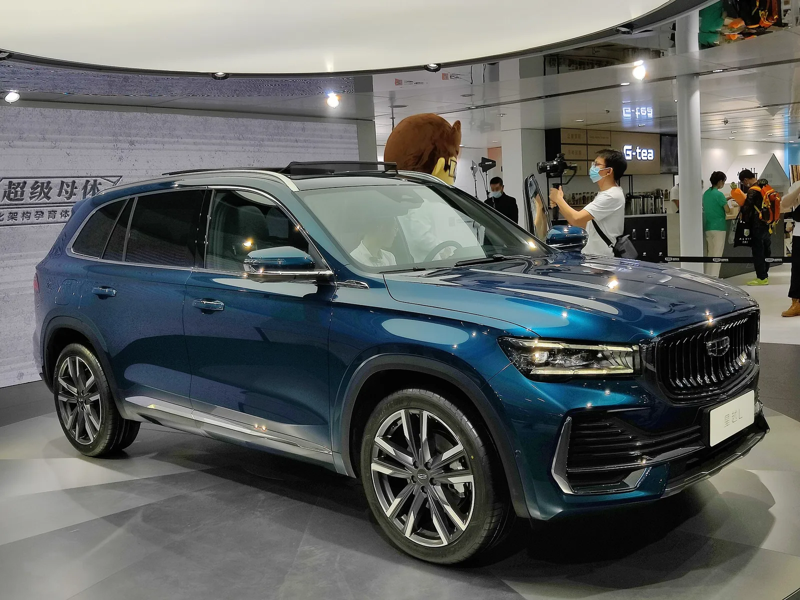
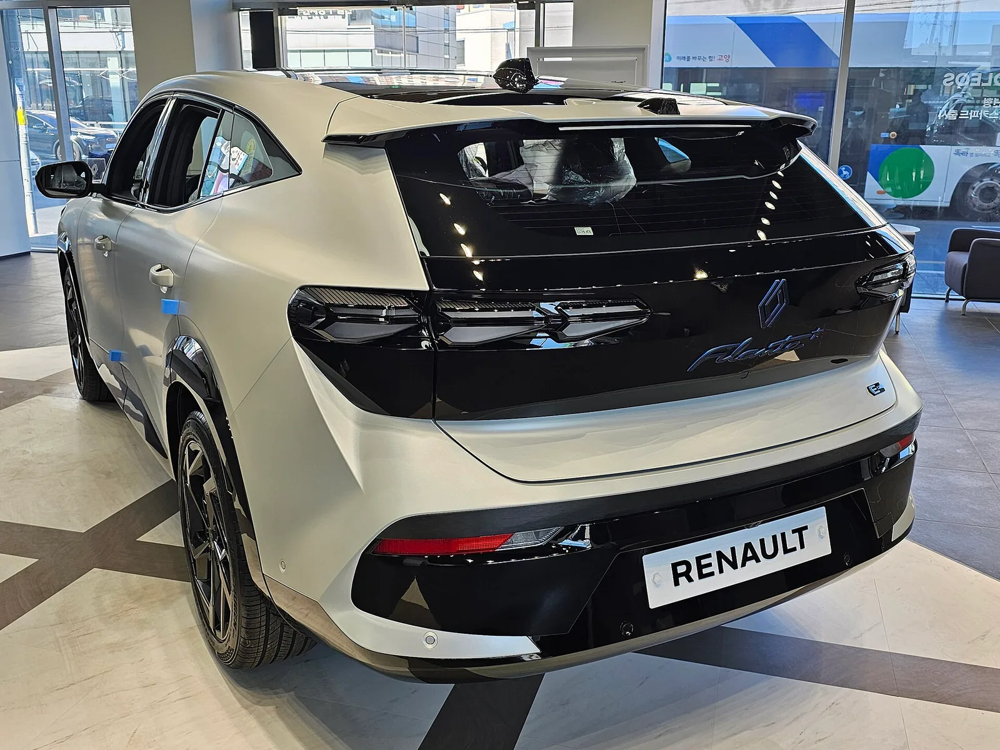

▲ 그랑 콜레오스 — 지리 계열 플랫폼을 쓰는 르노코리아의 모델
"중국과 손잡으면 판매 돌파구가 열린다." 지피코리아가 2026년 10월 5일 보도한 기사(윤여찬 기자, 10월 7일 수정)의 요지다. 한국GM·르노코리아·KG모빌리티가 판매 부진을 벗어나려 중국 기업과 손잡고 전동화 모델을 내놓고 있다는 내용이다. 그런데 이 3사의 2026년 9월 내수 판매는 르노코리아 2,289대(전년 동월 대비 -45.3%), KGM 2,100대(-48.8%), 한국GM 727대(본지 계산 -40.9%)로 모두 크게 줄었다. 기사 제목의 "전기차·PHEV 급증"을 뒷받침하는 공식 수치는 이 글이 확인한 어떤 자료에서도 찾지 못했다. 이 글은 3사가 각각 어느 중국 업체와 어떤 방식으로 협력하는지, 그 협력이 숫자로 확인되는 지점과 아직 확인되지 않는 지점을 각 사 발표를 전한 보도로 가려 정리한다. 9월 판매 전체 비교는 완성차 5사 9월 판매 기사에서 먼저 다뤘다.
1. 보도가 말한 것과 확인된 것
3사가 중국 업체와 손잡았다는 사실은 확인되지만, "판매 돌파구"라는 표현은 숫자로 확인되지 않는다. 지피코리아 기사는 르노코리아가 지리자동차와 협력해 낸 그랑 콜레오스와 필랑트가 의미 있는 판매량을 기록했고, 한국GM이 9월 30일 뷰익의 첫 모델인 PHEV SUV '엘렉트라 E7'을 출시했으며, KGM은 체리자동차와 공동개발한 고연비 하이브리드를 내년 초 선보일 계획이라고 전한다. 아래 표는 이 서술을 공식 발표를 전한 다른 보도와 맞춰본 결과다. 지피코리아 기사는 "급증"을 판매량·점유율 수치가 아니라 BYD·지커·볼보·폴스타 등 중국 업체의 국내 진출 사례, 중국차가 빠르게 자리 잡고 있다는 전문가 발언, PHEV 신차 출시 흐름으로 설명한다. 한국GM 철수설과 국내 관세율 8%도 배경으로 짚었다. 이 글은 기사 취지 자체를 부정하려는 것이 아니라, 제목의 "급증"이 수치로 확인되는지를 따진다. 지피코리아 원문은 지피코리아 기사 바로가기 에서 볼 수 있다.
| 보도 서술 | 확인 결과 |
|---|---|
| 한국GM, 9월 30일 뷰익 E7 출시 | 9월 30일은 국내 공개·사전예약 시작일. 판매는 11월(ZDNet Korea) |
| KGM, 체리와 공동개발 하이브리드 내년 초 | "2027년 초"는 KGM 발표. 파워트레인은 PHEV와 2.0ℓ 가솔린으로 보도됨(전자신문) |
| 르노코리아, 지리 협력 모델 의미 있는 판매 | 9월 내수 그랑 콜레오스 1,007대, 필랑트 591대. 전년 동월 대비 3사 모두 감소 |
| 전기차·PHEV 급증(기사 제목) | 기사 본문에 판매량·점유율 수치 없음(중국 업체 진출 사례·전문가 발언·신차 출시 근거). 3사 공식 수치로도 확인 못함 |

▲ 3사의 중국 협력은 방식이 서로 다르다. 판매 성과와는 별개로 구조를 먼저 구분해야 한다 ⓒ 카프리즘 제작
2. 르노코리아와 지리: 플랫폼을 공유하고 내수는 줄었다
르노코리아의 중국 협력은 지리(Geely)와의 플랫폼·지분 관계다. 지리가 2022년 5월 르노코리아 지분 34.02%를 인수한다고 밝힌 것으로 보도됐고, 그랑 콜레오스는 지리 싱유에 L과 같은 CMA 플랫폼 계열로 알려져 있다. 필랑트는 2026년 1월 13일 서울에서 월드 프리미어가 열렸고 3월 한국 출시를 시작으로 연말부터 남미·중동·호주로 판매를 넓힐 계획이라고 경향신문이 전했다. 지분 인수는 2022년 5월 10일 르노코리아 발표를 전한 당시 보도로 확인했고, 플랫폼 관계는 언론 보도와 위키 자료로 확인했다(르노코리아·지리 공식 문서는 직접 열지 못했다). 니콜라 파리 르노코리아 사장은 필랑트를 "한국의 첨단 기술과 프랑스 감성이 만난 협업의 정점 모델"이라고 설명했다.
▲ 그랑 콜레오스 E-테크 하이브리드. 지리 계열 플랫폼을 쓰는 모델로 보도됐다 ⓒ Damian B Oh, Wikimedia Commons (CC BY-SA 4.0)
숫자는 협력이 곧 내수 급증은 아니라는 점을 보여준다. 파이낸셜뉴스가 전한 르노코리아 발표에 따르면 9월 총 판매는 6,556대로 전월(4,261대)보다 53.9% 늘었다. 내수는 2,289대로 전월 대비 13.1% 증가했지만 전년 동월과 비교하면 45.3% 줄었다. 모델별 내수는 그랑 콜레오스 1,007대(전월 대비 +8.4%), 아르카나 691대(+20.2%), 필랑트 591대(+13.7%)다. 그랑 콜레오스의 2025년 9월 내수는 3,019대로 당시 보도(비즈워치, 2025년 10월 1일)에 나와, 1년 사이 약 66.6% 줄었다. 르노코리아는 9월부터 필랑트와 2027년형 그랑 콜레오스 고객에게 최대 7년·14만km 무상 보증연장을 제공하며, 이에 대한 관심이 내수 증가에 영향을 줬다고 설명했다. 제도 내용은 르노코리아 7년·14만km 보증 기사, 필랑트의 판매 추이는 필랑트 판매 기사에 있다.
| 구분 | 9월 | 전월 대비 | 전년 동월 대비 |
|---|---|---|---|
| 총 판매 | 6,556 | +53.9% | -24.7% |
| 내수 | 2,289 | +13.1% | -45.3% |
| 수출 | 4,267 | +90.7% | -5.8% |
| 그랑 콜레오스 내수 | 1,007 | +8.4% | 약 -66.6%(전년 3,019대 보도 기준) |
| 필랑트 내수 | 591 | +13.7% | 2025년 9월 출시 전 |

▲ 필랑트. 3월 국내 출시된 준대형 크로스오버로 9월 내수 591대를 기록했다 ⓒ Damian B Oh, Wikimedia Commons (CC BY-SA 4.0)
수출에서는 폴스타 4가 3,124대(유럽향 3,116대 포함)로 전체 수출의 절반 이상을 차지했다. 즉 르노코리아의 9월 회복은 내수 모델의 급반등보다 수출과 전월 대비 기저 효과가 컸다. 한국면세뉴스는 1~9월 누계 판매를 47,231대(-32.0%)로 전했지만 이 수치는 해당 매체에서만 확인했다.
3. KGM과 체리: 공식 발표와 보도가 갈리는 지점
KGM–체리 협력의 확인된 핵심은 7,500만 달러 투자 계약과 공동개발 SUV 한 대, 그리고 두 번째 차종 추진이다. 전자신문(2026년 8월 3일)에 따르면 KGM이 체리자동차와 7,500만 달러 규모의 전략적 투자 계약을 체결했다고 밝혔다. 첫 공동개발 결과물인 SE-10은 렉스턴 계보를 잇는 중형 SUV이고 플러그인 하이브리드와 2.0ℓ 가솔린으로 구성되며 출시는 2027년 초다. 곽재선 KGM 회장은 "KGM 70년 기술 노하우와 체리차 친환경차 파워트레인 기술 협력을 통해 미래 모빌리티 기업으로 성장, 발전해 나갈 것"이라고 말했다. 두 번째 공동개발 프로젝트는 차종이 특정되지 않았다.
ℹ️ 일부 매체에만 나온 내용
투자 방식이 전환사채 인수이고 전량 전환 시 체리 지분율이 16.22%가 된다는 내용, 2027년 1월 출시와 총 판매 목표 6만 대는 뉴스핌 등 일부 매체의 보도다. KGM의 "2027년 초"라는 표현 외에 이 수치들을 KGM 문서로 확인하지는 못했다. 같은 차를 다룬 기존 기사의 프로젝트 이름(S10)과 SE-10이 같은 차인지도 확인하지 못했다. 관련 내용은 KGM 프로젝트 S10 기사에서 볼 수 있다.

▲ 체리 전시 부스의 SUV. 위키미디어에서 티고 9로 분류된 사진이며 KGM과 공동개발 중인 SE-10이 아니다 ⓒ JustAnotherCarDesigner, Wikimedia Commons (CC BY-SA 4.0)
이 협력이 판매로 이어졌다는 증거는 아직 없다. SE-10은 2027년 초에야 나오고, 9월 KGM 내수는 2,100대로 전년 동월 대비 48.8% 줄었다. KGM은 보도자료에서 전기차 보조금 소진 등을 내수 감소 원인으로 꼽았고, 수출은 6,763대로 3.5% 늘어 총 판매는 8,863대가 됐다(한국경제는 전년 동월 대비 -16.7%로 보도). 딜사이트는 체리 플랫폼에 의존하는 정도가 커져 기술 종속 우려가 있다고 지적했다. 이 지적은 해당 매체의 해석이며 KGM은 지분 투자가 공동개발을 안정적으로 추진하기 위한 것이라고 설명한 것으로 전해진다.
4. 한국GM과 뷰익: 아직 팔지 않은 차가 돌파구가 될 수 있나
뷰익 엘렉트라 E7은 판매 실적이 있을 수 없는 차다. ZDNet Korea에 따르면 한국GM은 9월 30일 뷰익의 국내 진출을 공식 발표했고, 사전 예약은 같은 날 시작됐으며 본격 판매는 11월이다. 이 차는 GM과 중국 상하이자동차가 50%씩 출자한 SAIC-GM이 개발·생산하는 PHEV SUV로, 1.5ℓ 자연흡기 엔진에 최고출력 165kW·최대토크 330Nm 구동 모터를 조합했다. 한국GM이 제시한 기준으로 배터리 최대 31.7kWh, 전기 모드 최대 126km, 통합 1,000km 이상이다. 국내 공인 수치는 판매 시점에 공개된다. 가격은 4개 트림 4,300만~5,400만 원대다. 자세한 비교는 엘렉트라 E7 국내 출시 기사와 시험 주행 포착 기사를 참고할 수 있다.

▲ 중국에서 촬영된 뷰익 엘렉트라 E7. 국내 판매 사양과 같은지는 확인하지 못했다 ⓒ Dinkun Chen, Wikimedia Commons (CC BY-SA 4.0)
한국GM의 9월 실적은 총 41,101대로 수출이 40,374대, 내수가 727대다. 내수는 전년 동월 1,231대에서 줄어 약 40.9% 감소했다(본지 계산이며 ZDNet Korea 보도의 -40.9%와 같다). 즉 한국GM의 숫자를 끌어올린 것은 중국 협력이 아니라 수출이다. 한국GM은 115개 이상의 서비스 네트워크로 뷰익 정비를 지원할 계획이라고 밝혔다. 서비스망의 규모는 한국GM 서비스 네트워크 기사에서 다뤘다. 헥터 비자레알 한국GM 사장은 뷰익이 "120년 이상의 헤리티지"를 바탕으로 새로운 프리미엄 선택지를 제시할 것이라고 말했다.
5. 9월 내수 숫자: 3사 모두 -40%대
완성차 5사 내수는 9월 99,843대로 전년 동월 124,515대보다 19.8% 감소했고, 3사의 감소폭은 그보다 훨씬 컸다. 이유로는 KGM이 전기차 보조금 소진을, 현대차가 추석 연휴로 인한 영업일수 감소와 신차 대기 수요를 들었다. 2026년 추석은 9월 말이었고 2025년 추석은 10월 초였다는 점도 비교 기준이 다른 이유가 될 수 있다(본지 설명). 아래 도표는 이 글의 제목에 쓴 숫자의 근거다.

▲ 2026년 9월 내수, 전년 동월 대비 감소율. 한국GM은 본지 계산 ⓒ 카프리즘 제작(각 사 발표 보도 수치)
| 회사 | 내수(대) | 전년 동월 대비 | 수출(대) |
|---|---|---|---|
| 르노코리아 | 2,289 | -45.3% | 4,267 (-5.8%) |
| KGM | 2,100 | -48.8% | 6,763 (+3.5%) |
| 한국GM | 727 | 약 -40.9%(본지 계산, 전년 1,231대) | 40,374 |
| 완성차 5사 합계 | 99,843 | -19.8%(전년 124,515대) | - |
다만 추석 연휴와 보조금 소진이 어느 정도씩 영향을 줬는지는 각 사가 수치로 밝히지 않았고, 르노코리아와 한국GM이 감소 이유를 설명했는지는 확인하지 못했다. 중국 협력 모델과 감소 사이의 인과관계를 증명할 자료도 없다. 이 숫자가 보여주는 것은 협력이 아직 내수 실적으로 확인되지 않는다는 점까지다. 중국산 전기차의 국내 점유율 흐름은 중국산 전기차 국내 점유율 기사에서 따로 확인할 수 있다.
6. "전기차·PHEV 급증"은 어디서 확인되나
확인된 PHEV 급증은 3사가 아니라 수입 PHEV에서, 그것도 BYD 한 차종에서 나온다. 뉴스핌이 전한 한국수입자동차협회(KAIDA) 자료로 8월 국내 수입 PHEV 신규 등록은 1,334대로 전년 같은 달 997대보다 33.8% 늘었다. BYD 씨라이언 6 DM-i가 500대로 37.5%를 차지했고, 이를 뺀 나머지 수입 PHEV는 834대로 오히려 16.3% 줄었다. 이는 한국 시장의 수입 PHEV에 관한 수치이고 한국GM·르노코리아·KGM의 PHEV·전기차 판매가 급증했다는 근거가 아니다.

▲ 지리 싱유에 L. 그랑 콜레오스와 같은 플랫폼 계열로 알려진 중국 모델이다 ⓒ JustAnotherCarDesigner, Wikimedia Commons (CC BY-SA 4.0)
✅ "중국 맞손" 기사를 읽을 때 확인할 점
· 협력(플랫폼·투자·수입 판매)과 판매 실적은 별개의 이야기다
· 한국GM 뷰익 E7은 판매가 11월에 시작돼 9월 실적이 있을 수 없다
· KGM–체리 첫 차는 2027년 초 출시 예정이라 판매 수치가 아직 없다
· 르노코리아 9월 회복의 큰 몫은 수출(폴스타 4 3,124대)과 전월 대비 기저다
· "급증"이 어느 기간·어느 회사의 수치인지 출처를 먼저 확인할 것
7. 앞으로 확인할 지표
다음에 확인할 지표는 세 가지다. 첫째, 10월 판매 실적(11월 초 발표)에서 르노코리아 보증 확대의 효과가 이어지는지. 둘째, 11월 뷰익 E7 판매 개시 이후 한국GM 내수 월 판매량. 셋째, 2027년 초 KGM–체리 공동개발 첫 차의 가격과 출시. 이 가운데 국내 공인 전기 주행거리와 정확한 트림별 가격은 판매 시점까지 알 수 없다. 중국 업체와의 협력이 장기적으로 판매 돌파구가 될지는 이 수치들이 쌓여야 판단할 수 있다.

▲ 필랑트 후면. 3사의 중국 협력 모델이 내수에서 어떤 성적을 낼지는 다음 달부터 가려진다 ⓒ Damian B Oh, Wikimedia Commons (CC BY-SA 4.0)
8. 요약
르노코리아는 지리와의 플랫폼·지분, KGM은 체리와의 7,500만 달러 투자·공동개발, 한국GM은 상하이자동차 합작사(SAIC-GM)가 만든 뷰익 E7 수입 판매로 서로 다른 방식의 중국 협력을 하고 있다. 하지만 2026년 9월 내수는 르노코리아 2,289대(-45.3%), KGM 2,100대(-48.8%), 한국GM 727대(본지 계산 -40.9%)로 모두 줄었다.
"전기차·PHEV 급증"은 3사의 공식 수치로 확인하지 못했다. 확인된 급증은 8월 수입 PHEV(1,334대, +33.8%)이며 BYD 씨라이언 6 한 차종이 500대를 차지했다. 뷰익 E7은 11월, KGM–체리 첫 차는 2027년 초에 판매가 시작되므로 협력의 효과는 아직 숫자로 가려지지 않았다.